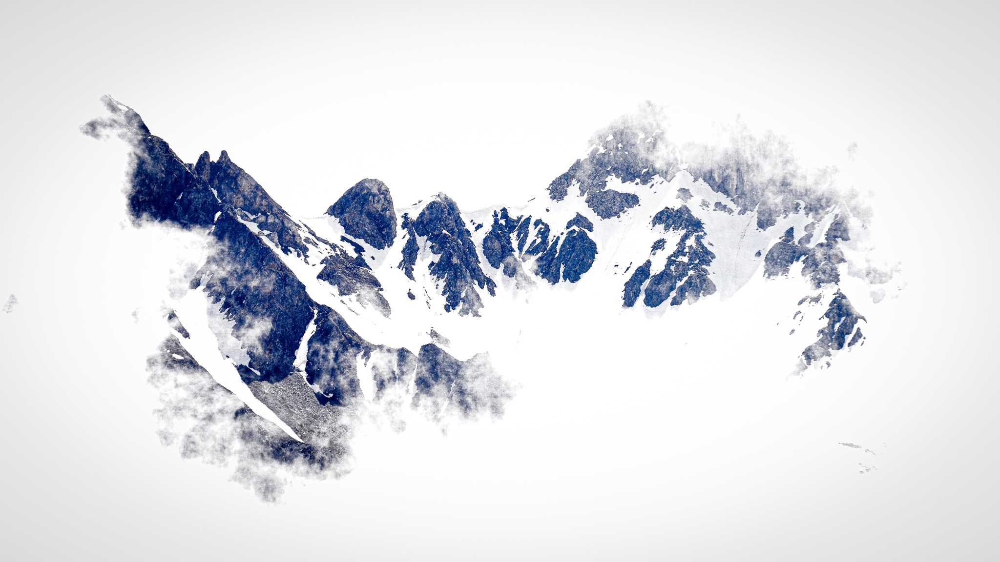

Fotografie di Magda Bernasconi
Attimi cherestano.
La fotografia, il mio modo di ricordare.
Esplora le fotografieMBM PHOTO ART · MAGDA BERNASCONIEntra nel mio mondo ↓
Portfolio · Magda Bernasconi
Il mio sguardo.
Diciotto fotografie. Un invito a guardare più da vicino.
Affina la selezione
Nessuna fotografia per questa combinazione di filtri.
Uno sguardo più vicino
La raccolta completa, su richiesta.
Se il mio sguardo ti parla, scrivimi. Sarò felice di condividere con te la raccolta completa.
Richiedi la raccolta completaOgni scatto è un viaggio.
Ogni immagine racconta una storia.